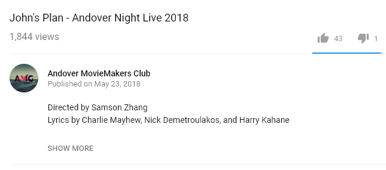
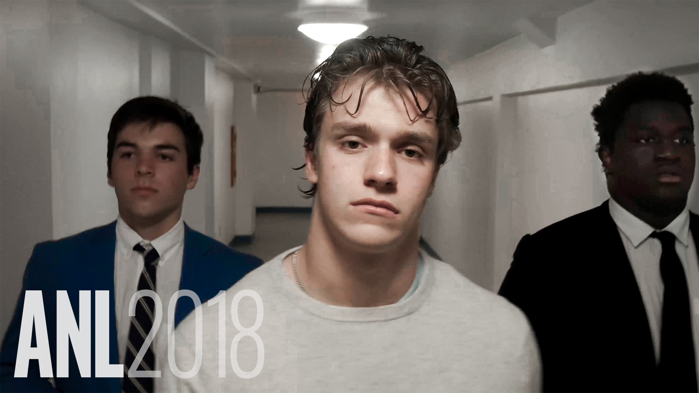
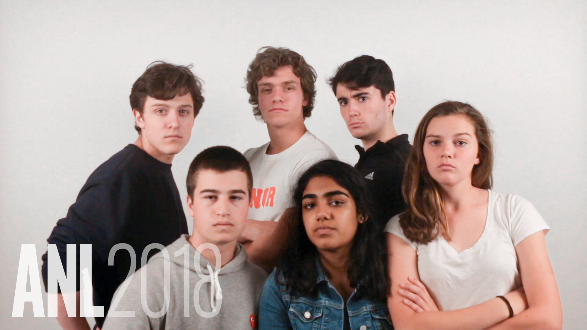
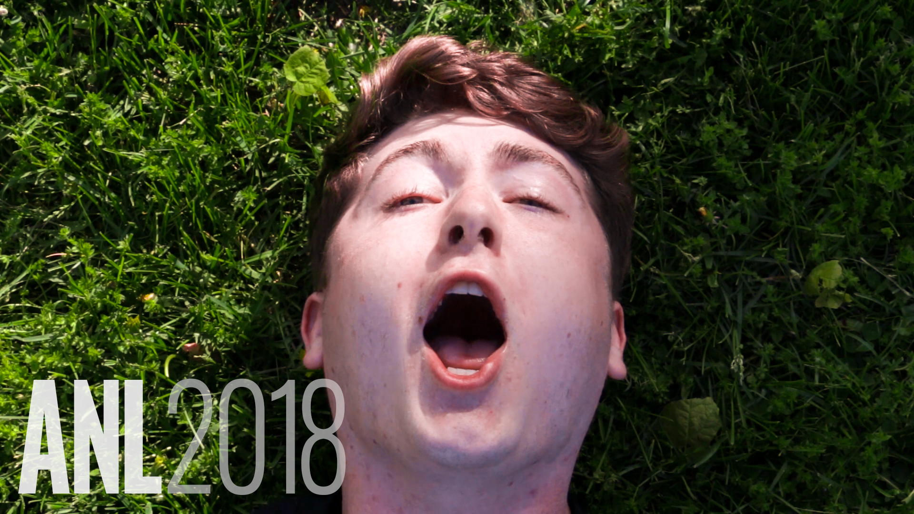

Every year in late May, Phillips Academy's premier comedy group Under the Bed hosts Andover Night Live, drawing an audience of hundreds of students. In addition to live skits and performances, the show includes pre-made videos.
John's Plan is a parody of Drake's God's Plan, spoofing our head of school John Palfrey and some school policies and programs this past year. As a member of Andover Moviemakers, I was asked by UTB members Nick Demetroulakos and Harry Kahane to bring the project to life. I helped produce the song, as well as shot, directed, and edited the video. The visual component consisted of representing lyrical jokes as well as visual jokes and mirroring elements of the God's Plan music video. (And a lot of slow motion. God bless slo-mo on the A6500.)
The video became the flagship video of the show, amassing almost 2000 views on YouTube in the three days after its upload. Ultimately, UTB president Charlie Mayhew, after speaking with Mr. Palfrey, made the unilateral decision to take the video down to prevent its misuse by those outside of the school community.
In addition to working on John's Plan, I also supervised tech and editing for all projects alongside fellow Moviemaker Harrison Ringel, and took over especially as shownight drew near. I was the cinematographer for the majority of the ANL intro (below), edited by Harrison, and ran tech on the night of the show.
  